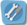

להלן תיאור המדיניות של וירטואל טווינס בע"מ (להלן: "אנו, שלנו, לנו, אלינו או איתנו") בנוגע לאיסוף, שימוש וחשיפה של מידע אישי, שאנו מקבלים כאשר אתם נכנסים ל - ekoloko.com (להלן: "האתר"), ועושים שימוש בחלק כלשהו מהשירות או מהתוכנה שלנו דרך האתר.
מדיניות הפרטיות עשויה להשתנות ולהתעדכן מעת לעת. אם נבצע שינויים מהותיים כלשהם במדיניות הפרטיות הזו, אנו נפרסם הודעה אודות שינויים אלה באתר ובמדיניות הפרטיות הזו. מומלץ שתעיינו במדיניות פרטיות זו בקביעות למקרה שנעשו בה שינויים כלשהם.
1. איסוף מידע
מדיניות פרטיות זו חלה רק על מידע שתספקו לנו בצורה מקוונת, במהלך ביקור או שימוש באתר. המידע שאתם עשויים לספק בעת ביקור או שימוש באתר מסווג לשתי קטגוריות רחבות: מידע המאפשר זיהוי אישי ומידע אחר. "מידע המאפשר זיהוי אישי" הוא מידע אישי שלכם שניתן להשתמש בו לצורך זיהוי שלכם או התקשרות עמכם, כגון שם וכתובת הדואר האלקטרוני. "מידע אחר" הוא מידע שאינו מזהה אתכם, והעשוי לכלול, לדוגמא, מידע סטטיסטי באשר לדפי הרשת באתר שלנו אשר המשתמשים באתר מבקרים בהם בתדירות הגבוהה ביותר, וביחס לפעילות המשתמשים באתר. מדיניות הפרטיות שלנו חלה על שתי קטגוריות מידע אלה, כמפורט להלן.
1.1 מידע המאפשר זיהוי אישי
כדי להפוך למשתמשים של האתר אנו מבקשים מכם את הפרטים הבאים: שם משתמש, סיסמה, מין, מדינת המושב (ללא עיר או רחוב) וכתובת דואר אלקטרוני. אינכם מחויבים על פי דין לספק מידע כזה, אך הינכם נדרשים לספקו אם ברצונכם להפוך למשתמשים של האתר.
אנו מבקשים גם תאריך לידה (יום, חודש ושנה). ואת כתובת הדואר האלקטרוני העדכנית של הוריכם, על מנת להודיע להם כי הינכם רשומים באתר ולצורך הודעות נוספות כמפורט בסעיף 2.
אנו אוספים, מאחסנים ועשויים לבחון רשומות של תקשורות באתר אשר היית מעורב בהן. כאשר משתמשים הופכים למשתמשים בתשלום של האתר, אנו מערבים צדדים שלישים אשר אוספים את המידע האישי מהמשלם עבור המשתמש. סוגי המידע, העשויים להיאסף ולהישמר באותה עת, כוללים את השם המלא של המשלם, כתובת דואר אלקטרוני, מידע לחיוב כרטיס אשראי לרבות מען למכתבים, וכל מידע אחר שיידרש מעת לעת. אנו ממליצים לכם לקרוא את מדיניות הפרטיות ואת שאר התנאים באתר של הצדדים השלישים הנ"ל לפני השימוש בשירותיהם.
בנוסף לכך, אתם עשויים לקבל הצעה באתר להשתתף בסקרים או בשאלונים שעשויים לכלול חשיפה של פרטיכם האישיים. להשתתפות בסקרים או בשאלונים נדרשת הסכמת הוריכם.
האתר מאפשר לכם לשוחח ולתקשר עם משתמשים אחרים. כדי להגן על עצמכם, אל תחשפו באתר שלנו בפני משתמשים אחרים מידע המאפשר זיהוי אישי שלכם (כגון שמכם האמיתי, כתובתכם, פרטי הדואר האלקטרוני או הטלפון האמיתיים שלכם) ואל תבקשו פרטים אישיים ממשתמשים אחרים באתר.
1.2 מידע אחר
מידע באשר לפעילויות המשתמשים שלנו באתר (כגון מידע סטטיסטי לגבי עמודים בהם מבקרים, תאריך ושעת הביקור, פעילויות נוספות שהם מבצעים וכמה זמן הם צופים בעמודים אלה) ומידע שהדפדפן שלך שולח בכל פעם בה הינכם מבקרים באתר אינטרנט (כגון כתובת ה-IP של המחשבים שלכם, סוג הדפדפן, דף הרשת שביקרתם בו לפני כניסתכם לאתר), הם מידע אחר.
כאשר אתם משתמשים ב-widget או בכל כלי אחר שאנו מציעים, בין אם באתר או באתר אינטרנט של צד שלישי, לרבות אתר אינטרנט השייך לכם או מופעל על ידכם, אנו עשויים לתעד מידע הקשור לפעילות זו, השימוש ב-widget או בכלי הנ"ל וכל מידע אחר הקשור לחשבון.
1.3 "עוגיות" (Cookies)
אנו מאפשרים לכם להתיר הפעלת "עוגיות". "עוגיות" הן קבצי טקסט קטנים שאתר אינטרנט יכול להשתמש בהם כדי לזהות משתמשים חוזרים, להקל על כניסה חוזרת לאתר האינטרנט והשימוש בו, ולאסוף מידע אחר במטרה לשפר את אתר האינטרנט. "עוגיות" עובדות כדלקמן: אנו נשלח קובץ "עוגיה" לדפדפן שלך, המקשר באופן ייחודי את המחשב שלכם עם מידע המאוחסן באתר. הדפדפן שלכם ימקם את קובץ ה"עוגיה" בקובץ ה"עוגיות" שלו. בכניסתכם הבאה לאתר מהמחשבים שלכם, האתר יזהה את ה"עוגיה", יהפוך את המידע המאוחסן לזמין (כגון שמות משתמש, סיסמה ובחירת שפה) והוא עשוי להוסיף מידע חדש בהתבסס על ביקורכם הנוכחי.
1.4 תקשורות
כאשר אתם שולחים אלינו דואר אלקטרוני או יוצרים עמנו קשר בכל דרך אחרת, אנו רשאים לשמור התקשרויות אלה על מנת לעבד את פנייתכם, להגיב לבקשותיכם ולשפר את שירותינו (בין אם הם כוללים מידע המאפשר זיהוי אישי ובין אם לא).
1.5 אתרי אינטרנט אחרים
אנו מציעים ומספקים גישה לאתר בקשר עם אתרי אינטרנט אחרים. מידע המאפשר זיהוי אישי שתספקו לאתרים אלה, עשוי להישלח אלינו על מנת לאפשר שימוש באתר. אנו מעבדים מידע זה בהתאם למדיניות פרטיות זו. לאתרים האחרים יש נהלי פרטיות שונים, ואנו ממליצים לכם לקרוא את מדיניות הפרטיות שלהם.
מדיניות פרטיות זו חלה רק על האתר. אין לנו שליטה על קישורים מתוך האתר. אנו עשויים להציג קישורים באופן המאפשר לנו לעקוב אחר השימוש אשר נעשה בקישורים אלה. בנוסף, גופים או אנשים אחרים שאנו נעזרים בהם לצורך שירותים הקשורים לניהול האתר (לרבות ביצוע תשלומים וגביה), ואתרי אינטרנט אחרים, עשויים למקם קבצי "עוגיות" או קבצים אחרים שלהם במחשבים שלכם, לאסוף מידע או לבקש ישירות מכם מידע המאפשר זיהוי אישי. אתרי אינטרנט אחרים קובעים כללים שונים בקשר לאיסוף, שימוש או גילוי של מידע הניתן לזיהוי אישי אשר תמסרו. אנו ממליצים לכם לקרוא את מדיניות הפרטיות והתנאים האחרים של אתרי האינטרנט האחרים לפני השימוש בשירותיהם.
2. איך אנו משתמשים במידע שאנו אוספים
2.1 מידע המאפשר זיהוי אישי
אנו מאחסנים ומשתמשים במידע המאפשר זיהוי אישי, אשר אתם מספקים לנו באתר לפי דרישתנו במטרה: (i) לאפשר כניסה לאתר; (ii) לפקח על השימוש שלכם באתר ובחשבונכם באתר, לרבות להתקשר עם הוריכם בנוגע להתנהגות לא ראויה שלכם בקשר עם האתר; (iii) להבטיח שכל המשתמשים עומדים בתנאי השימוש של האתר ובמדיניות וכללים אחרים של האתר; (iv) לענות ולהגיב על שאלות והערות שלכם; (v) לספק לכם איגרות מידע, עדכונים וחומרים אחרים הקשורים למטרות האתר שלנו, או מידע והצעות הנוגעים לנו או לצדדים שלישיים, שאנו מאמינים שעשויים לשמש או לעניין אתכם; (vi) וכמפורט להלן.
בנוסף, ובכפוף לדין החל, אתם נותנים לנו רשות לאחסן את המידע הנאסף מכם בבסיסי הנתונים שלנו.
כדי לקדם את מטרות האתר, אנו רשאים לקשר את המידע המאפשר זיהוי אישי שסיפקתם עם מידע אחר. קישור מידע זה יאפשר לנו ליצור חבילות מידע ושירותים המתאימים בצורה הטובה ביותר לאינטרסים ולהעדפות שלכם. בין השאר, קישור מידע זה עשוי לאפשר לנו, באופן כללי, לשפר ולמקד את האתר שלנו. אם נאחד או נקשר מידע כלשהו עם המידע המאפשר זיהוי אישי שלכם, האיחוד המתקבל ייחשב למידע המאפשר זיהוי אישי לפי מדיניות הפרטיות הזו.
אתם רשאים בכל עת לבחור שלא לקבל דואר אלקטרוני ומידע אחר שאנו רשאים לשלוח לכם ע"י כך שתודיעו לנו כי ברצונכם להסיר את שמכם מרשימת התפוצה בהתאם להוראות המופיעות בתקשורות אלה או באמצעות שליחת הודעה בכתב בדואר רשום למען הרשום שלנו (הבנים 14א, הוד השרון, ישראל). עם זאת, חשוב לנו שנוכל לשלוח הודעות לכתובת הדואר-האלקטרוני של הוריכם כפי שציינתם בתהליך הרישום לאתר. אם תבחר שלא לקבל הודעות דואר-אלקטרוני בנושא תנאי השימוש באתר והכללים והמדיניות הנהוגה באתר לאותה כתובת דואר-אלקטרוני, אנו עשויים, עלולים באופן מיידי לחסום את כניסתכם לאתר ולמנוע את שימושכם בו.
2.2 מידע אחר
אנו משתמשים במידע אחר לשם המטרות אשר הוצגו לעיל וכן על מנת לפקח על האתר ולנתחו (לדוגמא - לאמוד את העניין והשימוש של המשתמשים שלנו באזורים שונים באתר שלנו), לשפר את תפקודו, עיצובו ואיכותו, להכין ניתוחים סטטיסטיים וניתוחים מסכמים אחרים של התנהגות המשתמשים שלנו, לצורך הניהול הטכני של האתר וכדי לחקור מקרים של חשד לשימוש לרעה.
בנוסף, אנו רשאים לחלוק מידע אחר ודוחות המבוססים על המידע הזה, עם צדדים שלישיים שאינם קשורים לאתר, לרבות הציבור הרחב, לשם ניתוח ענפי, שרטוט פרופיל דמוגרפי ומטרות מסחריות אחרות. מידע אחר כזה שאנו מספקים לצדדים שלישיים לא יאפשר לאיש לזהותכם.
2.3 "עוגיות" ("Cookies")
אנו משתמשים ב"עוגיות" כדי לשמור את שם המשתמש, הסיסמה ובחירת השפה שלכם לשם כניסות עתידיות לאתר, כדי להבין טוב יותר איך אתם משתמשים באתר וכדי לעקוב אחר התנועה המנותבת באתר ואחר השימוש המצטבר באתר.
2.4 מידע המאפשר זיהוי אישי ומידע אחר
הורים. אנחנו עשויים לספק מידע המאפשר זיהוי אישי עליכם לכתובת הדואר-האלקטרוני של הוריכם כפי שציינתם בתהליך הרישום לאתר, כגון כל התנהגות לא ראויה שלכם בקשר עם אתר.
צדדים שלישיים. אנו עשויים לחלוק מידע אחר (כגון דו"חות שהוכנו כתוצאה משימושכם באתר) עם צדדים שלישיים לטובת ניתוח ענפי, בניית פרופיל דמוגרפי, מטרות מסחריות אחרות והעברת פרסומים מכוונים לגבי מוצרים ושירותים אחרים. כל מידע אחר שנחלוק בהקשר זה לא יכיל מידע המאפשר זיהוי אישי.
ספקי שירותים. אנו רשאים להעסיק חברות ויחידים חיצוניים כדי להקל על השימוש באתר וכדי לבצע שירותים הקשורים לניהול האתר (לרבות, אך לא רק, עיבוד תשלומי חשבונות ותשלומים בכרטיס אשראי, תחזוקה, אחסון ושירותי ניהול בסיסי נתונים, ניתוחי רשת ואדמיניסטרציה). לצדדים שלישיים אלה יש גישה למידע המאפשר זיהוי אישי שלכם על מנת לבצע מטלות אלה מטעמנו בלבד.
ציות לחוקים ואכיפת חוקים. אנו משתפים פעולה עם הממשל, פקידי רשויות אכיפת החוק וגורמים פרטיים על מנת לאכוף את החוק ולציית לו. אנו נגלה לגורמים אלה כל מידע אשר נאמין כי הוא נחוץ או מתאים כתגובה לתביעות ולהליכים משפטיים (לרבות, אך לא רק, הזמנות לבית משפט ולצווים מנהליים), להגנה על רכוש שלנו או של צד שלישי,לשמירה על זכויות או ביטחון הציבור או של כל אדם אחר, כדי למנוע או לצמצם איום מנזק מיידי לכם או לאחרים, או כדי לאפשר לנו לנקוט אמצעי זהירות כנגד חבות.
העברת פעילות. אנו רשאים למכור,להעביר או לחלוק בכל אופן אחר את כל הנכסים שלנו או חלק מהם, לרבות, בין היתר, מידע המאפשר זיהוי אישי שלכם, וזאת בקשר לרכישה, מיזוג, ארגון מחדש שלנו מכירה של נכסים שלנו או במקרה של פשיטת רגל שלנו.
3. איך אנו שומרים על מידע שאנו אוספים
התקנו מערכות אבטחה המיועדות למנוע גילוי ושימוש אסור במידע שאתם תספקו לנו. מערכות אלה בנויות כדי להרתיע ולמנוע מ"האקרים" ומאחרים גישה למידע זה. יחד עם זאת, בשל טבעם של אמצעי תקשורת האינטרנט והטכנולוגיות המתפתחות, אנו לא יכולים להבטיח, ואיננו נוטלים אחריות לכך, שהמידע שתספקו לנו לא יאבד, לא ינוצל לרעה, ולא ייעשו בו שינויים על ידי צדדים שלישיים אשר, למרות מאמצינו, השיגו גישה לא מורשית למידע זה.
4. איך לגשת למידע שאתם מספקים, להסירו או לשנותו
אתם יכולים לבחון, לעדכן או לתקן מידע המאפשר זיהוי אישי שסופק לנו על ידכם על ידי התחברות לאתר והקשה על איקון פרטי המשתמש . אתם רשאים, ככל שהדבר מותר על פי החוק, למחוק את המידע המאפשר זיהוי אישי שסופק לנו על ידכם (דבר אשר למעשה יגרום להפסקת חברותכם באתר), אלא אם כן אנו נדרשים לשמור מידע זה על פי החוק, באמצעות יצירת קשר איתנו בבאמצעות דואר רשום למען שלנו (כאמור לעיל). אנו שומרים על הזכות לוודא את הזהות של כל אדם השולח בקשת תיקון/עדכון, אך לא נישא באחריות מכל סוג הנובעת מבקשות שקריות או שגויות.
אנו רשאים לפי שיקול דעתנו למחוק כל מידע שסופק על ידכם או קשור אליכם, בהתאם למדיניותנו באותה עת.
5. עיבוד או העברה בינלאומיים
בכפוף להוראות הדין החל, המידע שלכם עשוי להיות מעובד או מועבר מחוץ למדינתכם לתחום שיפוט בו דיני הפרטיות יכולים להיות פחות מגנים מאשר בתחום השיפוט שלכם.
6. יצירת קשר איתנו
האתר מאפשר למשתמשים לתקשר ישירות עם משתמשים אחרים, כגון על-ידי משלוח הודעות ציבוריות או פרטיות מוגדרות מראש ופרסום הערות בפורומיםלהערות או שאלות כלשהן בנוגע למדיניות פרטיות זו, אנא צרו עימנו קשר דרך מחלקת שירות לקוחות של וירטואל טווינס בע"מ, הבנים 14א, הוד השרון, ישראל.